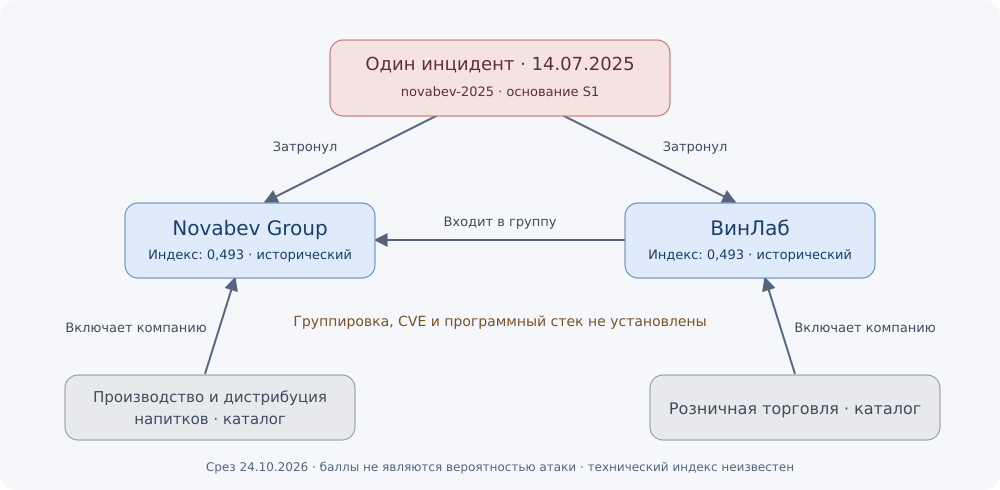

Кейс 01. Novabev Group и ВинЛаб
Аналитическая записка • срез на 24 октября 2026 года • инцидент 14 июля 2025 года
Вывод для аналитика
В выбранных официальных материалах есть основание связать Novabev Group и ВинЛаб с одним историческим инцидентом. Атрибуция группировке, способ первоначального доступа, CVE и установленное ПО не определены. Кейс пригоден для демонстрации работы с доказательствами и ограничениями графа. Оснований представлять его как прогноз новой атаки или актуальный адресный сигнал в данном наборе нет. Это ограничение исследованного набора, а не утверждение об отсутствии угроз.
Вопрос и охват
Задача: установить, какие отношения можно включить в граф и как они влияют на оценку сегодня. Рассмотрены четыре сообщения Novabev Group за июль–август 2025 года и октябрь 2026 года. Все они относятся к одному издателю; количество сообщений не означает независимое подтверждение. Проверка закрытых площадок, содержимого утечек и инфраструктуры компании не выполнялась.
При повторной проверке 24.10.2026 прямое открытие официальных страниц вернуло 502/таймаут. Доступны индексированные тексты первоисточников; их содержание сопоставлено с локальными пересказами. Полные страницы заново не сохранены. Реестр URL, способ проверки, ID записей и хеши локальных пересказов находятся в evidence.json. Эти хеши не выдаются за хеши оригинальных страниц.
Хронология и основания
| Дата | Что можно сказать | Источник |
|---|
| 14.07.2025 — дата события; 16.07.2025 — публикация | Компания сообщила о нарушении части ИТ-инфраструктуры группы и ВинЛаб, денежном требовании и отказе его выполнять. Отсутствие ущерба персональным данным описано как предварительная оценка при продолжающемся расследовании. | S1 — первоначальное заявление |
| 22.07.2025 | Сообщалось об открытии более 100 торговых точек и поэтапном возвращении онлайн-сервисов. План восстановления не равен доказанному сроку полного восстановления. | S2 — восстановление |
| 18.08.2025 | Упомянут выкуп за расшифровку данных, восстановление ключевых процессов и программа усиления защиты. Формулировка о расшифровке дополняет первоначальное описание вымогательства. | S3 — последующее сообщение |
| 08.10.2026 | Компания описала влияние восстановления после июльского инцидента 2025 года на динамику продаж. Свежая публикация относится к последствиям прошлого события. | S4 — результаты девяти месяцев |
Различие дат принципиально: публикация S4 появилась недавно, но дата обсуждаемой атаки осталась в 2025 году. Русское и английское представления одного пресс-релиза также не считаются двумя независимыми источниками.
Что отражено в графе
Один узел инцидента novabev-2025 связан с двумя затронутыми организациями. Отдельно сохранена связь ВинЛаб → входит в группу → Novabev Group. Для классификации используются отрасли каталога: производство и дистрибуция напитков и розничная торговля. Организационная принадлежность не доказывает общий домен, единую сеть или одинаковый программный стек.
Стрелки APT → компания и APT → CVE для этого кейса не добавляются. Поле «группировка неизвестна» не заменяется наиболее похожим профилем MITRE. Денежное требование не позволяет определить конкретный инструмент, а меры по усилению защиты не раскрывают установленную версию продукта.
Схема: открыть граф кейса. Запросы для Neo4j: graph.cypher. Источники проверенных отношений — исходные утверждения, а не само изображение графа.

Проверка альтернативных объяснений
- Версия «обычный технический сбой» хуже согласуется с заявлением потерпевшей стороны об атаке. Независимая техническая экспертиза в выбранных материалах отсутствует.
- Гипотеза вымогательства с шифрованием согласуется с формулировкой S3. Семейство шифровальщика и технический механизм не установлены; отдельный узел Malware не создаётся.
- Кража данных остаётся неизвестной. Предварительное заявление S1 о персональных данных не исключает кражу иных данных и не заменяет итогов расследования.
- Связь с конкретной группировкой или CVE не подтверждена. Сходство с другими атаками на ретейл само по себе её не устанавливает.
Расчёт индексов
Расчёт выполнен по текущему снимку, модель weighted-graph-v3. Полные параметры, хеш конфигурации, пути и исключения сохранены в score_snapshot.json. Это не ретроспективный прогноз накануне инцидента: материалы и проверки появились в базе значительно позже события.
Для обеих организаций пригоден компонент истории инцидентов. Уверенность high даёт множитель 1, основание victim_report — экспертный коэффициент 0,9. Между датой события и датой среза 467 дней; период полураспада для индекса интереса — 90 дней.
затухание = 2 ** (−467 / 90) = 0,027415
вес основания = 1 × 0,9 × 0,027415 = 0,024674
вклад истории = 20 × 0,024674 = 0,493471 балла
| Организация | Индекс интереса / 100 | Техническая подверженность / 100 |
|---|
| Novabev Group | 0,493 — только историческое основание | Недостаточно данных |
| ВинЛаб | 0,493 — только историческое основание | Недостаточно данных |
Маленький балл означает слабый вклад старого основания в этой модели; он не означает вероятность атаки 0,493% и не доказывает безопасность. Для технического индекса нет проверенной цепочки «используемое ПО → применимая CVE». Отраслевой каталог сам по себе баллов не добавляет.
Сообщения S1–S4 объединены по incident_id. Их роли помечены как исторический инцидент, восстановление или последующее описание последствий. Они исключены из компонента новых адресных сигналов, даже если повторное сообщение свежее и подтверждено. Новая запись S4 не увеличила оценку. Два узла компаний в данном кейсе не означают две атаки.
Решение и следующий шаг
Текущий статус кейса: исторический инцидент с существенными пробелами технических данных. По рассмотренным материалам нет основания переносить компанию в очередь срочной проверки новой атаки. Текущие адресные сигналы вне этого набора не исследованы исчерпывающе, поэтому вывод нельзя распространять на весь открытый интернет или дарквеб.
Для следующего обновления нужны итоговый разбор расследования либо новые сообщения с проверяемой связью с компанией. Имеет смысл искать прямые сведения об исполнителе, механизме доступа и подтверждённых последствиях. Новое адресное заявление должно проверяться отдельно, а не автоматически подтверждаться историей этого инцидента. Уточнённые сведения о ПО и CVE потребуют отдельной проверки применимости.
Короткий сценарий демонстрации
- Открыть источник S1 и показать разделение даты события и даты публикации.
- Показать один инцидент и две организации в графе, затем перейти к доказательству связи.
- Сопоставить S1 и S3: позднее сообщение уточняет описание, не создавая новую атаку.
- Показать S4 и объяснить, почему свежая дата не повышает индекс новых адресных сигналов.
- Раскрыть формулу 0,493 и объяснить, почему технический индекс неизвестен, а не равен нулю.
Записка подготовлена с помощью ИИ; проверка опирается на перечисленные открытые материалы и отмеченные ограничения доступа. В ней нет заявления о самостоятельном техническом расследовании или прямом мониторинге теневых площадок.